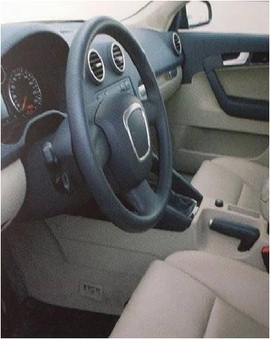

緩衝
- 高靈活度的緩衝泡棉設計來吸收衝擊能量，此泡棉性質不容易變形。
- 滿足特定要求可改變的堅固性。
- 即使常被壓縮卻能有效吸收能量防止衝擊的泡棉。
- 高技術的聚氨酯泡棉，可在設計時讓它附有緩衝功能。
- 其他相關功能，包括，密封，襯墊，位置和間隔的運用。
- 所製作出來的泡棉皆可以增加密度並後制處哩(網狀， 塗佈，層壓)。
吸震泡棉，可用於舒適立體聲的耳機，環繞揚聲器，護目鏡，柔軟之商品， 座椅，汽車墊片和密封，地毯，超市產品之展示墊。聚氨酯減震泡棉也可以使用於汽車，卡車，飛機或密封灰塵，光，蒸氣或水的電器
